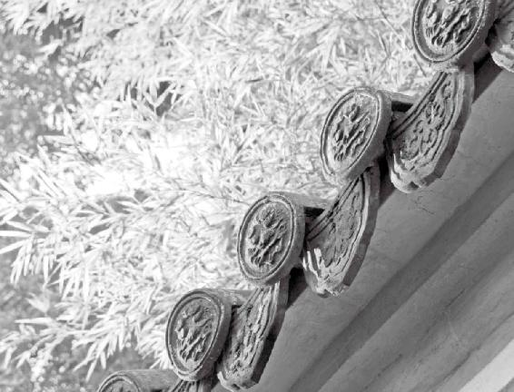

为什么有的单身女性没有相亲的欲望，就连结婚也感觉没意思？
很多人痛苦不是因为外界环境、人际关系的困扰，而是因为自己的内心在打架。整天就处在一个自己拎着自己的头发往死里拽的那种状态，很痛苦。
大家应该尝一尝“顺四时”“通神明”后得道的那种感觉，太美妙了。
经文：
道者，圣人行之，愚者佩之。从阴阳则生，逆之则死，从之则治，逆之则乱。反顺为逆，是谓内格。
是故圣人不治已病治未病，不治已乱治未乱，此之谓也。夫病已成而后药之，乱已成而后治之，譬犹渴而穿井，斗而铸锥，不亦晚乎！
按自己的“天性”去活
徐文兵：接下来是“道者，圣人行之”。
梁冬： “行之”，就是身体力行地去实践嘛。但是，“愚者佩之”怎么解释呢？
“坐而言不如起而行”。
徐文兵：我们先说说圣人。圣人是先知“道”，知道怎么回事儿。知这个“道”的起伏变化规律了，然后“行之”。有句话叫“坐而言不如起而行”，就是说你“知”这件事了，但你不去实践它，那等于无知。“语言的巨人，行动的矮人”，做这样的人是很失败的。另外，当你“知”一件事情以后去“行”它，这中间是有难度的。为什么？
梁冬：因为还有熟练程度。
徐文兵：还有意识上接受了，内心不接受的原因。我经常说“心”和“意”是两回事。“心”是本能、元神；“意”是指我们后天接受的教育。很多人在意识上接受了这个事，但他发自内心地不认同。
我前一段时间去日本，看见东京有座铁塔，建了五十多年了。上面大概二百多米高的地方有个平台，铺的是透明的玻璃地砖，你站在上面就能看见底下的车和人。当时，我在意识上知道踩上去是掉不下去的，因为它是玻璃钢构成的嘛！但是好多人都伸不出脚，踩上去走走还是害怕啊！
“心”是本能、元神；“意”是指我们后天接受的教育。很多人在意识上接受了这个事，但他发自内心地不认同。
这就叫“知”，你虽然“知”晓掉不下去，但你的内心还是不认同，身和心之间还是有距离，有分裂的。
实际上，真正做人就要做到自己的心和意是合二为一的。很多人痛苦不是因为外界环境、人际关系的困扰，而是因为自己的内心在打架。心刚刚冒上来一个想法，意就来反对；或者是意冒上来一个念头，心又来反对。整天就处在一个自己拎着自己的头发往死里拽的那种状态，很痛苦。
什么是“三岁看大，七岁看老”？
梁冬：一脚踩刹车，一脚踩油门。
徐文兵：就是这种状态。“心”和“意”之间为什么会出现这么大的矛盾？这就跟我们从小受的教育有关。父母老想把我们培养成一个有用的人，而为谁所用呢？为别人用。所以树林子里面有用的木材全被砍了，留下来的树全是歪七扭八的，不能用。《庄子》说过，要把人培养成有用之人，这说法本身就是个谬论。
人应该怎么活呢？应该顺应自己的天性去活。所以最好的教育孩子的方法是什么？我们经常说“三岁看大，七岁看老”，三岁之前自由观察他的天性，三岁到七岁这段时间就应该顺应他的天性来诱发、启导他，让他去做一些事情。这样长大的孩子将来一辈子都会活得不拧巴、不扭曲、不变形。他的身心是和谐、统一、一团和气的，他自个儿活得高兴，周围的人跟着也活得很舒服。这就是正确的教育方式。
要把人培养成有用之人，这说法本身就是个谬论。
为什么家长要从小教育孩子“你应该这样，应该那样”。为什么都喜欢把自己从小没实现的愿望强迫加诸在孩子身上。我最近治疗了几个患有强迫症的孩子，发现更应该接受治疗的是他们的妈。
梁冬：有些父母想当然地把小孩生出来，然后一厢情愿地按照自己的愿望去培养。
强迫症的孩子，更应该接受治疗的是他们的妈。
徐文兵：结果就是“逆其根、伐其本”，孩子倒是按他的意思长大了，称了他的心，如了他的意了，但孩子的心被毁了。
徐文兵：刚才我们说到了“行之”，为什么有些事，我们在意识层面接受了，但就是不去行动呢？实际上是没有发自内心地接受。
如何让一个人发自内心地接受一件事？那就去调他的情，动他的心，动他的神。
怎么能让一个人发自内心地接受一件事？调他的情，动他的心，动他的神。光通过言语的力量来调动他，没用。就像你上到铁塔的那个玻璃平台的时候，别人说什么底下是玻璃钢，有保险的，没事儿，你走走吧。你还是会犹豫再三，因为这不是理性能解决的问题。
现在很流行的一种训练叫“拓展”。它能帮你把“心”和“意”合起来。就是到野外去，给你绑上保险绳，然后跳独木桥，或是跨过一个深涧。在意识上，你明明知道摔不死，但就是跨不出那一步。很多人泪流满面，最后退下来了。为什么？因为他的心很弱，接受不了这种刺激。
还有一种训练是让你站在一墩矮墙上，后面有几个人伸着胳膊做出接你的姿势，让你身体笔直往后倒，后脑勺着地，你倒不倒？如果你发自内心地认同你的团队，那你就能倒；如果你心里不相信他们，那你就倒不下去。尽管在意识上，你不断说服自己“他们会接着我的，会接住”。
所以在平时，我们一定要训练自己，一要得“道”，二要知“道”，三要行“道”。“行道”是一件很痛苦的事情，像我读的大学是六年制的，毕业后做住院医、主治医，到后来，我当年的很多同学都改行了，为什么？大家虽然都知“道”了，但最后不去行“道”了，这实际上是一个感情问题。
在平时，我们一定要训练自己，一要得“道”，二要知“道”，三要行“道”。
所以我想我从小受我妈的那种教育感染，可能已经动了我的神，我就是别人都改行了，或者前面有更好的诱惑等着我去做，我都没有改。那会儿，我外语好，我可以去做别的事情，甚至去做买卖，我到了美国我可以改行嘛！为了挣钱嘛！但我依然没改。
为什么？我觉得就是我小时候，三岁到七岁那会儿，母亲给我的影响已经调了我的神，让我坚定地走行医、教书这条路，然后在生活中实践它。在这个过程中，我也坐过冷板凳。别看现在大家说挂我的号有多难，我当年坐冷板凳的时候，大家没看见。但是我咬着牙走过来了，因为我相信自己选的这条路是对的。
梁冬：正心诚意！
徐文兵：你看，把“心”和“意”这两者合二为一以后，什么事都可行了。
把“心”和“意”这两者合二为一以后，什么事都可行了。
梁冬：而且是先正心，后诚意。
徐文兵：比如说举办婚礼，搞个仪式，进行宣誓，从意识层面上判断，这有用吗？签了合同都可以毁约！那宣誓干什么？这其实主要是在调神，在调动你的情绪，激起你产生一种神圣感，让你发自内心地接受这件事情。
梁冬：我个人认为，西方的婚姻是在教堂里完成的，是要互相宣誓的。东方的结婚方式本来还挺神圣的，但一闹洞房就把一件挺严肃的事情给荒谬化了。
徐文兵：我们现在把很多事情都娱乐化和低俗化了，特别是看到神圣的事物时产生的那种肃然起敬的敬意，全毁掉了。现在好多人到寺院去烧香，还计较要烧多少钱的香，这就相当于是在卖人们对它的一种敬意和神圣感。人们对你发自内心的那种尊敬，值多少钱？我说那是无价的。而我们现在内心的那种神圣感消失了，没有了。
我们现在把很多事情都娱乐化和低俗化了，特别是看到神圣的事物时产生的那种肃然起敬的敬意，全毁掉了。
我看见很多人就像行尸走肉一样，两眼无神。我也看到不少人在一些细节、条目上下功夫。但我看到那些真正成事的人，他的脚后跟是有一种力量，眼中是有神采，内心里也有一种信念和信仰的，而且他的后脊梁会产生一股发热的神圣感。他不仅信他坚持的东西，而且还在不断实践。这样做本身就有一种魅力和感染力。
真正成事的人，他的脚后跟是有一种力量，眼中是有神采，内心里也有一种信念和信仰的，而且他的后脊梁会产生一股发热的神圣感。
跟随他的人可能会说“即使工资拿得不高，我也要跟着你干”，为什么？因为他们在干的时候有一种幸福的感觉。
梁冬：曾经有人说追女孩，最重要的就是你得投入到你的工作里面。你甭管做什么事情，你一专心的时候，就会有魅力。
老天爷通过天造地设，让我们成为一个人多不容易啊！有多少神奇的东西被我们自己毁掉、淹没、蒙蔽掉了？中医只不过告诉你说“你有这个本事，你应该这样”，而不主张你去拧巴，扭曲着过日子，最后造成一种变态的结果。
徐文兵：“精诚所至，金石为开”。古代那么硬的玉是怎么雕？怎么琢出来的？大家不妨想一想，那个雕玉之人的精神状态，现在有几个人能达到？那种状态出来的时候，绝对金石为开。李广射箭的故事大家都知道，某日他喝醉了，忽然看见前面卧了一只老虎，搭弓一射，“啪”的一声射进了。第二天一看，所谓的“老虎”原来是块石头，那支箭就在石头里。然后他重新站在几丈开外搭弓射箭，怎么射也射不进那块石头了，因为当时射“老虎”的那个状态没有了。所以大家一定要记住，天赋予了我们很多东西，就好像我们买了照相机、电脑，最终到照相机、电脑坏了以后，很多功能我们还是没用上。
梁冬：我们对身体的开发也是这样。
徐文兵：老天爷通过天造地设，让我们成为一个人多不容易啊！有多少神奇的东西被我们自己毁掉、淹没、蒙蔽掉了？中医只不过告诉你说“你有这个本事，你应该这样”，而不主张你去拧巴，扭曲着过日子，最后造成一种变态的结果。
很多人身上都有超乎于别人的神奇东西，那叫“本能”。
现在很多人身上都有超乎于别人的神奇东西，有人说这是特异功能，我说那不是，那叫“本能”。要我说，晚上睡不着，白天醒不了，言语恶毒，行为乖张，那才叫特异功能。
晚上睡不着，白天醒不了，言语恶毒，行为乖张，这才叫特异功能。
真正成事的人，他的内心有一种坚持，这种信念让他全身充盈着一种幸福感。
不知道往哪儿走叫愚人
梁冬：“愚者佩之”如何解释呢？
“愚”就是指蠢货、愚笨的人。
徐文兵：我上大学的时候，曾问过老师什么叫“愚者佩之”？老师说：“‘愚’就是指蠢货、愚笨的人；‘佩’是通假字，通‘背道而驰’的‘背’。这句话的意思是说圣人是行道的，而愚的人是背道而驰的。”我听完后，当时就觉得他解释得不对。如果“佩”字可以这么通假的话，那所有的字都可以这么通假了。那什么叫“愚”？
梁冬：愚公移山！
徐文兵：他就是一根筋，头脑钻在一个角落里出不来的那种人。
梁冬：阿甘。
徐文兵：喜欢钻牛角尖儿的人。有个成语叫“向隅而泣”，心思陷在一个角落里出不来，没有出路。蠢货是瞎走，而愚人是不知道往哪儿走。我们敬佩某个人的时候喜欢讲“佩服”，那什么叫“佩服”？在古代，这是中医里两种调理身体的方法。
蠢货是瞎走，而愚人是不知道往哪儿走。
比如说，我们在身上佩一些玉、珠子，或者是其他东西，还有人佩戴牛皮绳或是弓弦，这样能起到治疗身心的作用。如果你平时老优柔寡断，那佩个玉玦能提醒自己：“哎呀，我要做决定，要有决断力。”鸿门宴上范曾几次举起玉玦，就是在提醒项羽赶紧下决定，杀刘邦，摔杯为号，你赶紧宰他，这叫“玦”。
我们在身上戴个玉，护一下自己，这叫“佩”。另外一种中医的治疗方法叫“服气”，就是在内衣里边带个香囊，里面装点药，你闻到那个味儿就能治疗某种疾病。
“佩”和“服”之间的区别在哪儿？“服”是在内衣里附上一个香囊，穿在里边看不见；而“佩”是挂在外面的，环佩叮当嘛。
“佩服”在古代是中医里两种调理身体的方法。
“愚者佩之”是什么意思？愚者知道这是个好东西，于是就挂在外面当幌子，做给别人看。其实他根本就不是真信这个东西，也不是在身体力行地去实践它。
在身上戴个玉，护一下自己，这叫“佩”。“服”是在内衣里附上一个香囊，穿在里边看不见。
我爱看课外书，等我妈一进门，我就赶紧把正经的书拿出来。我妈早就看穿了我那点儿伎俩——“腰里别个死耗子，假装打猎”。所以，“愚者佩之”的意思是把《黄帝内经》这本书经常放在自己案头，跟别人说话的时候，还要经常带出几句《黄帝内经》原文。结果真正到了需要“春夏养阳，秋冬养阴，昼出夜伏”的时候，他就整天该睡觉的时候却在那儿熬夜！白天该干正事了，他还在那儿挂着幌子让别人看。自个儿根本就不信，也不去“行之”，这就叫“愚者佩之”。
“愚者佩之”：知道这是个好东西，就挂在外面当幌子，做给别人看。其实他根本就不是真信这个东西，也不是在身体力行地去实践它。
梁冬：刚才讲到“愚者佩之”时，我很奇怪，你明明知道“佩”是这个意思还跑去问老师？
徐文兵：上大学的时候真不懂。我当时只感觉他说得不对，但什么答案是对的，我也不知道。不过，钻研中医的“种子”埋下来了，精诚所至，金石为开。我也是在研究“佩服”的时候，突然想到“愚者佩之”不就是挂在外面让别人看到嘛。
梁冬：切中我们自己呀！“愚者佩之”的意思是我们一定要身体力行。就像以前我们说的，老是讲文学的，永远不会成为文学家；老是讲管理的，他也永远不会成为管理者。
徐文兵：为什么我要跟大家说阴阳变化，四季更替，包括昼夜变化这些规律，因为我是这方面的得益者，受益者。
梁冬：就是身体力行的。
徐文兵：咱年轻过，也折腾过，也尝过折腾的滋味，但折腾完后突然觉得这样做好像不行，这才“复归于道”。等我再去这么做的时候，突然发现自己精力充沛了。
年轻过，也折腾过，但折腾完后突然觉得这样做好像不行，这才“复归于道”。等再去这么做的时候，突然发现，自己精力充沛了。
我讲《黄帝内经》，给很多人的印象是，我好像是个研究《黄帝内经》的人。其实不是，我是个大夫，一周工作五天。原来我一周工作六天，一天八个小时都在看病。那精力从哪儿来？我不逆阴阳，不逆四时。另外，当我身体力行以后，我突然发现自己很有灵感。
大家都在干活，为什么有人干着干着，突然掏出一张小纸条就能写一句诗，但有些人干完以后啥感悟也没有？这其实就是所谓的灵感，是跟天地神灵沟通时突然出现的一种现象。这就像我们把收音机调到某个频率以后，突然收到了某条信息。古人讲“文章本天成，妙手偶得之”，老天已经把这篇文章写好了，如果你把接收器调到了某个恰当的频率，那灵感就涌现了。所以大家应该尝一尝“顺四时”“通神明”后得道的那种感觉。
大家应该尝一尝“顺四时”“通神明”后得道的那种感觉，太美妙了。
梁冬：所以冯小刚是这样吹捧刘震云老师的，他说：“您哪是写文章，您那文章只不过是上帝透过您的笔给划拉出来了。”
徐文兵：我特别喜欢冯小刚，我觉得那个人很真，不在那儿装。说到中医看病，举个例子，“扁鹊救虢太子”的故事大家都知道，虢太子都已经死了，装进棺材了，结果扁鹊又把他给救活了。这是《史记》里明确记载的一个故事。
然后，大家都说扁鹊能起死回生。当时，扁鹊就说了一句：“余非能生死人，因其自当生，余使之起尔。”意思就是说：“他的生机还在，我不过是扶了他一把。”所以。有的人看中医把病给治好了，就说“啊，你妙手回春，神医！”不对，因为那个人的生机根本都还在，命不该绝。我们只是扶了他一把。
我以前治过一些外国朋友，治好了以后，人家都是感谢他们信的上帝。那会儿我正年轻，还曾暗自嘀咕：“你怎么不感谢我？”
其实，他们认为是上帝通过医生的手，把他的病给治好了。所以，他们后来就说：“徐大夫，我们会为你祈祷的。”
现在我突然发现，一个人发自内心地赞美你，为你祈祷，那是无价的。
当时我心想：你多给我点钱不就完了？祈祷算什么呀！现在我突然发现，一个人发自内心地赞美你，为你祈祷，那是无价的。这就是我现在的体会。
分不清阴阳的人叫王八蛋
梁冬：接下来是“从阴阳则生，逆之则死，从之则治，逆之则乱”。
徐文兵：“从阴阳”之前要“知阴阳”。这句话好像有点儿啰嗦，但事实上有些人真的分不清阴和阳。举个简单的例子，在生活中，有些人总找不对男女厕所，经常走错。这种分不清阴阳的人，我们叫他“混沌”——混沌一片，分不清。有个骂人的词叫“混蛋”。什么叫混蛋？
生活中，有些人总找不对男女厕所，经常走错。这种分不清阴阳的人，我们叫他“混沌”——混沌一片，分不清。
梁冬：就是蛋清、蛋黄不分。
徐文兵：鸡蛋有蛋黄、蛋清，有阴阳。那谁属阴？谁属阳？
梁冬：我看蛋黄应该是阴，因为它是成形的。
徐文兵：你看蛋黄居中，又是成形的，属阴，而蛋白属阳。所以，中医里有个方子叫“黄连阿胶鸡子黄汤”，它就把蛋清去掉了，单将蛋黄打在药汤里，能治虚劳、虚烦不得眠，心中烦不得卧，也就是失眠症。中医讲察色按脉，先别阴阳。作为一个人，你连阴阳都分不清楚，男女都不分，你还给人看病，那你就是混球。
为什么说“混蛋”呢？有的蛋是既没有蛋清，也没有蛋黄的，混沌一片。这个蛋是什么蛋？王八蛋。所以，混蛋就是王八蛋。
所以顺阴阳之前先分阴阳，你才知道是应该顺阳还是顺阴。春、夏属阳，秋、冬属阴，然后你跟着走。不然的话，小心成为那种混沌不分的人。
梁冬：知了阴阳之后，然后从阴阳嘛！
徐文兵：“初九，潜龙勿用”，这叫养阴；嚣张的时候，那叫养阳。但不论是养阴，还是养阳，我们都不要过头。
梁冬：过犹不及嘛。
徐文兵：就是“亢则害，承乃制”，过头了就容易出问题。

不偏爱，懂节制，方得长久。人生万事都是如此。
伤什么别伤神
梁冬：刚刚我们讨论到了“从阴阳则生，逆之则死”，接下来是“从之则治，逆之则乱”。请问“治”是什么意思？
一切尽在掌握中，身体的一切都在心的控制之下，这叫“治”。
徐文兵：毛主席以前有句特别有名的话，叫“天下大乱达到天下大治”，失去控制叫“乱”。一切尽在掌握中叫“治”。那是谁在掌握？
梁冬：毛主席。
徐文兵：毛主席是国家元首。那我们的身体谁来掌握？
梁冬：心。
徐文兵：“心者，君主之官，神明出焉。”身体的一切都在神明的控制之下，那叫“治”。如果身体的某个角落突然长出一个不阴不阳的东西，不断地繁衍，诱使细胞无限增生，这就是癌症、肿瘤。这是神明失去了对它的控制，或者我们说：“唉！本来只有一组控制身体的系统，却发出了两个信号。”有些人称之为自身免疫性疾病。本来身体的各个系统都是受心神控制的，结果它自己分泌了巨噬细胞去杀死自己的胶原细胞，腐蚀我们的关节、器官，这就叫内斗、内乱、内格。
本来只有一组控制身体的系统，却发出了两个信号；本来身体的各个系统都是受心神控制的，结果它自己分泌了巨噬细胞去杀死自己的胶原细胞，腐蚀我们的关节、器官，这就叫内斗、内乱、内格。
你如果发现自己得了这种病，从根上找原因，肯定是四时阴阳给逆乱了；如果你顺从阴阳的变化，那“从之则生”，这里的“生”不光是广义上的“生”。有人经常说“我的免疫系统功能不好，白细胞少”，那为什么白细胞不生？这时候你就要想想自己在春天干什么了。为什么你的精子存活率低下，为什么你的卵子、卵泡发育不理想？那就想想春天到底干了一些什么吧，这些问题都与“生”有关。
为什么有的单身女性没有相亲的欲望，说没意思，就连结婚也感觉没意思？这跟情有关。我们说发情的那种心态，那种青涩状态是在春天生的，到夏天，这种情感状态就变成爱了。这个人没有爱，没有欲望，整天唉声叹气的，为什么不生、不长？因为她逆着季节做事了。
为什么有的单身女性没有相亲的欲望，就连结婚也感觉没意思？
梁冬：夏天要生长，它不是一个适合分手的季节，谈分手应该在秋天。
徐文兵：跟着阴阳走——“从之”的话，身体会在安定的、受心神控制的状态下达到一种平衡的状态。
人的脏腑之间本来是有一种生克平衡的，很多人说：“咱们都生吧！”不对，五行里有个观点叫“生克制化”，本来“土”要泛滥了，木能控制它；如果树长得太大，自有金来控制。它们之间是有相生相克这种巧妙的规律在控制的，如果这一切尽在掌握，那心神就没乱。心神一乱，比如说很多人有这样的观点：“我都七十岁了，还移植了一个年轻人的心脏，那我的身体该有多好！”
梁冬：到时候，它肯定不协调。
徐文兵：你七十岁了，本来有一颗比较衰弱的、心率比较慢的心脏在那儿跳。作为一部“老爷车”，这样的心脏跟它对应的身体是匹配的。但是你突然移植进来一颗“嘭嘭”乱跳的，强健的心脏，作为心脏本身，它是好的。但对系统来说，就是个灾难了，因为它会导致系统加速崩溃。最后心脏是变强了，但是谁弱了？肺！这个人最后死于肺病。因为在五行里，心对应的是火，火克金。
很多报道说，做心脏移植的人最后往往死于肺病。结果医生宣布说：“我们很成功，心脏没出问题，他死于肺病，是得了另外一种病。”很有智，很无慧。这就是不把人当成一个系统来看的结果。所以“从之则治”，让你的心神去君临天下，统一治理你的“国家”。如果你非要逆着四季的节奏走，那你体内的神最后就不知所措了。比如说夏天，你突然从特别热的地方进到一个冰冷的房间里，神就不知道是该打开还是该闭合毛孔了。接收过几次这么错乱的信息后，你体内的神就有点儿崩溃了，最后它就干脆撒手不管了，你爱怎么着就怎么着吧！
如果你非要逆着四季的节奏走，那你体内的神最后就不知所措了。
现在夏天得感冒的人特别多。有一段时间，我的朋友推荐我去做那种类似火炕的治疗。就是在大都市里，工作人员把一个石头台子烧热了，让一些人躺上去发汗。
我看到后就问：“这眼看就要到春天了，天气慢慢变热了，你们这生意就不行了吧？”
对方说：“老板！你可说错了，越到夏天，我们这里的生意就越好。”我说：“为什么？”
“现在那些女孩吹空调吹得肩膀疼、腿疼、腰背疼的，到我们这儿一睡热炕，发出来一身汗就好了。”
你看，现在的人整个儿“逆阴阳”以后，把自己体内的神闹得特乱。“神”本身也觉得特痛苦——“我到底该怎么办？”
现在的人整个儿“逆阴阳”以后，把自己体内的神闹得特乱。“神”本身也觉得特痛苦——“我到底该怎么办？”
大都市里的人大热天的睡热炕，为什么？因为他们吹空调在先。有一个报道说，科学家提醒大家，在夏天凉菜吃不了的话，最好倒了，别往冰箱里放。热菜放冰箱里，第二天你吃的时候还得热一下，不管是放进微波炉里热也好，还是蒸或者炒也好，你都得热一下才能吃。但是凉菜拿出来，你就凉着吃了。这样对身体真的很不好，绝对很糟糕。而且大家记住，古人吃凉菜全是为了下酒，因为要烫一壶热酒喝才吃凉菜的。我们现在又不喝热酒，有些人喝的是冷啤酒，你还上盘儿凉菜。这样的人无知是肯定的，无觉也是肯定的。吃了不舒服，他也不知道。这就是“逆之则乱”。
梁冬：什么是“反顺为逆，是谓内格”？
徐文兵：本来我们是跟着四时的阴阳变化，顺着自然规律走的，这是动物的本能。但现在我们偏偏加了一些人为的意识进去。学了点所谓的学科，最后把本来顺的这种节奏搞成逆乱的了，你体内就开始“内格”了。什么叫“内格”？格就是格斗、内斗，起了内乱。我说很多人得病后，最终不是被细菌、病毒杀死的，而是自个儿把自个儿给杀死了。
什么叫“内格”？格就是格斗、内斗，起了内乱。很多人得病后，最终不是被细菌、病毒杀死的，而是自个儿把自个儿给杀死了。
梁冬：其实很多时候，我们都是自己在跟自己打架，最后受伤了。这就相当于用左手打右手，不是左手受伤，就是右手手伤。
徐文兵：这就叫“医得眼前疮，剜却心头肉”，总是在拆东墙补西墙，拆损了这个去填补另外一个。
梁冬：那“格物致知”的“格”是什么意思？
梁冬：首先它稍微有点儿固定，就是说定格了，动得不是太厉害。所谓的“物”，它不是气，而是有形有质的东西，所以它能固定下来让你仔细地看。
很多时候，我们都是自己在跟自己打架，就相当于用左手打右手，不是左手受伤，就是右手受伤。
我们研究尸体，这也叫“格物”。上大学一年级的时候，我们先接触的是尸体解剖课，那一学期我们都没吃过肉。为什么？心理冲击太大了。每天都闻着福尔马林的味儿，去扒拉那具尸体，这叫“格物”。但是大家想过没有？尸体和活体的区别在哪儿？推动这一堆肉运动的能量从哪儿来？胃在这儿，它为什么不蠕动呢？这你就从格物上研究不出来了。这个问题，你从知的程度上已经研究不了，只能靠悟。
你体会一下，背后推动身体各系统运作的能量是什么？这就研究到气了。但是气又从哪儿来？谁给它这个信号？怎么就让它从东走，不从西走？怎么才能让它从下而不是从上蠕动？这就跟我们体内的神有关了。
所以我认为“格物”是一门初级学问，是“知”的学问。格物而致知，这就是一个智的层次了。我们真正要去研究慧，体会那种极端抽象的，你看不见的东西。肉眼能看得见，手能摸得着，或者你借助某种仪器就能看得见、摸得着的东西，那都叫“物”。真正去研究那种看不见、摸不着的高层次，那就需要你的慧，这叫开慧。
“格物”是一门初级学问，是“知”的学问。格物而致知，这就是一个智的层次了。
梁冬：我们从“是谓内格”讲到“格物致知”，还是讲回“内格”吧。
徐文兵：刚才我说了几种比较明显的病理表现。你看有些人自残，比如小孩子把自己的手咬得血珠子直冒；还有那些得了抑郁症的人则喜欢把自己的手臂划得一道一道的鲜血直冒。这就是“内格”，谁伤害你了，没人伤你呀！
梁冬：自己跟自己打架。
徐文兵：自残、自伤、自杀的行为，都叫“内格”。身体本来是协调、和谐的一个系统，突然出现了内斗和内乱，而且到了“你死我活”的程度。这根源在哪儿？很明显，四时阴阳的变化肯定出问题了。
自残、自伤、自杀的行为，都叫“内格”。
中医经常说，人的某个脏器会随着季节的变化而出现沉浮。比如肝气在春天生，到了秋天它就会变弱；肺气到了秋天就会变强。这本来是很协调的，老天爷把它们分配得很好，但我们却人为地抑制了某个器官，同时又加强了某个器官的功能。这就造成天赋的本能的不平衡，结果就是内斗。这是外在明显的一个表现。
还有一种表现就是“自身免疫性疾病”，比方说类风湿、红斑狼疮等，这些免疫系统疾病是什么？自己分泌巨噬细胞、白细胞去吞噬自己本身的组织肌肉。
人的某个脏器会随着季节的变化而出现沉浮。老天爷把它们分配得很好，如果人为地抑制了某个器官，同时又加强了某个器官的功能，结果就是内斗。
很多人补肾，人为地加强肾的功能，但你记住，你补了一个脏，那制约它的那个脏肯定要变弱。吃伟哥能提高性功能，延长性交时间，补肾了，但结果是谁完蛋了？
梁冬：水克火嘛！心脏。
徐文兵：心脏受不了。很多人说吃伟哥导致心脏猝死是它的副作用引起的。我说什么叫“副作用”？完全是它的正作用引起的。你不了解人体的这种互相克制的关系，你的眼睛就有智无慧地盯着一个脏去想事情，所以你想着去补，人为地加强某一脏的功能，结果肯定要削弱另一脏的功能。老吃甜的话，补了脾，最后克制了肾的功能，最直接的结果就是牙掉了。
梁冬：所以龋齿不完全是因为老吃糖，或者是感染细菌的缘故，它其实还有更深刻的原因存在。
徐文兵：因为肾坏了，肾为骨之余，主骨生髓。
还有一种内格是内心的思想冲突不断，整天自己跟自己打架。所以大家记住，如果你这辈子想活得痛快，不出现我刚才说的那些病的话，那就顺阴阳，调四时吧。
还有一种“内格”是内心的思想冲突不断，整天自己跟自己打架。
别让价值观生病
梁冬：说到“内格”，其实是自己跟自己打架的过程，在很多时候，是因为“心”和“意”之间的冲突导致的。
“内格”，其实在很多时候，是因为“心”和“意”之间的冲突导致的，比如说阳痿，在意识层面，它特想起来，但就起不来。这就是心和意的冲突。
徐文兵：就是先天赋予你的神明和后天灌输给你的意识之间的冲突。
梁冬：所以，“是故圣人不治已病治未病；不治已乱治未乱，此之谓也”！
徐文兵：比如说阳痿，在意识层面，它特想起来，但就起不来，这就是心和意的冲突。再比如说，我的心跳得特别慢或者特别快，老想拿意识去控制它——“心跳快点”或者“心跳慢点”，它不受你控制。人只有在心和意沟通好了，身心处于一种和谐共振的状态时才会协调一致，这样人的一生才不会活得痛苦。所以我觉得有些问题说到根儿上，都是价值观的问题。
神是固定不变的，我们的任务就是去知“道”，然后去行“道”，把“道”变成我们身体的主宰（本心或者本神），然后顺应着本神去做事。作为父母，我们应该先观察孩子的天性，然后再去启发、诱导、顺应他的天性去做事儿，这样孩子过得就很快乐，你也就完成了你的任务。
否则的话，你就是在制造一个个的病人。所以说到根上，很多病人其实就是逆四时阴阳，没跟着天的点儿走。还有个问题就是，没跟着孩子的本神走。
最后一句话是中医里的一句经典——“是故圣人不治已病治未病”。现在国家正在大力提倡“中医治未病”的理念，但很多老百姓理解为“中医治不好病，让人做做保健吧。”
梁冬：我觉得，“未病”的“未”字含义挺深的。
徐文兵：有个词叫“别来无恙”，“恙”是指小毛病；有点细微的病症出来了叫“苛”；如果病来得快，去得也快，比如说发高烧，第二天就退了，这叫“疾”；如果已经有了明显的形质改变，这才叫“病”，意思就是落下把柄了。
法院判案的时候，我们经常说“你得有证据”。比如说发生了“家庭暴力”，要验受害者的伤，看是一度、二度还是轻伤，你得有伤才行。那你想过没有，家庭有冷暴力，这样的暴力行为，肉体上是没有任何损伤的。精神上的虐待更痛苦，但是你又拿不出证据来，你说法院怎么判？没法判。但这个家庭存在冷暴力是不是问题？这就好像我现在身体特不舒服，到了医院，查不出毛病。记住，这是医院无能，不是你没问题。这时，你就要去找一些超于物质以上的养生概念来判断。
中医讲“气”，讲“神”，你就应该去找中医来调理。已经到了有形有质的阶段时才叫“病”。古人用字很讲究，我们现在是乱用，把“疾”这种小的问题叫成“病”。
精神上的虐待更痛苦。
真正的“病”是有把柄，大家都能看得见的，有些经过特殊训练的、高明的医生能感觉到。
上中学的时候，我们都学过一篇课文，叫《扁鹊见蔡桓公》，扁鹊见蔡桓公的第一句话是“扁鹊见蔡桓公，立有间”，就是站了一会儿。扁鹊曰：“君有疾在腠理，不治将恐深。”这是扁鹊第一次见蔡桓公时说的话。
为了更优雅地在人生的天空翱翔，就要早做准备，未雨绸缪。
桓侯说：“寡人无疾”，我没事。第二次扁鹊复见，拜见的时候曰：“君之病在肌肤，不治将益深。”你看，换字了。
梁冬：不是“疾”，而是“病”了。
徐文兵：扁鹊走了以后，桓侯还说了一句话：“医之好治不病以为功”。什么意思？这帮当大夫的，专门就给那些没有太大问题的人治，最后还收人钱，以此作为荣耀。扁鹊说当你的疾在腠理时，说明它还只是个小毛病，还称不上病。“汤熨之所及也”，用药泡点水，烫烫洗洗就好了。所以，它叫“疾”。
等到疾病往里面发展了，“君之病在肌肤”，或者“君之病在肠胃”，他用词很讲究。我们讲了，不是说你不舒服了、难受了就叫“病”。只有已经有了形质的变化时，才能称得上病。
那至人就更不用说了，稍微有点风吹草动，他就已经给你调整好了。如果是圣人，那他就不会等到“疾”变成了有形有质的“病”时才给治，在病还没有成形之前，他已经开始治了。而且，它的下一句话叫“不治已乱治未乱”。
我讲了当心神失去对身体的控制，这局面就叫“乱”。此外，如果五脏失去了“生克制化”——相生相克的规律，一脏独大，或者是某脏的功能变得过弱，这也叫“乱”。“此之谓也”就是说的这个道理。如果你等到大病已经形成以后才给他服药，那就晚了。
当心神失去对身体的控制，这局面就叫“乱”。此外，如果五脏失去了“生克制化”——相生相克的规律，一脏独大，或者是某脏的功能变得过弱，这也叫“乱”。
梁冬：“病已成而后药之。”
徐文兵：古人讲“用药”，一般指内服药。扁鹊说“疾在腠理，汤熨之所及也；在肌肤，针石之所及也；在肠胃，火齐（通“剂”）之所及也。”“火齐”就是拿火熬上内服的药，得病以后必须得吃药了。如果等到身体已经一团乱象了，阴不降，阳不升，气血逆乱的时候，你再去调理。就好比“譬犹渴而穿井”，就是说你渴了才打井，这样就来不及了。“斗而铸锥”，敌人来了，马上就要上战场搏斗了，这时你才去打造兵器，“不亦晚乎！”是不是太晚了点呢？这是古人的谆谆教诲。
梁冬：好的管理者应该在事情发生之前，在别人还没有感觉到的时候看到端倪，然后把问题化于无形。
徐文兵：你知道病人感激大夫的时候，都感激什么样的？
梁冬：能起死回生的大夫？
徐文兵：对。病得不行了，他意识到问题的严重性了，你把他救了，他才感激你。如果你都没什么感觉，就跟蔡桓公一样，认为“寡人无疾”。这时候，我就算帮你拨弄好了，你会感激我吗？不会，你甚至还会怪怨我！所以，古人讲“医不叩门”，从来没有医生会主动来敲开你家的门，说：“梁冬，我觉得你最近太累了，我给你调理调理。”
真正懂得养生的人，总有几个知心的大夫、好朋友，这是可以交心过命的。一到换季的时候，你去找大夫帮你调理一下身体，那你在这一季或是这一年都将过得很顺。
所以，医患之间这种互相信任关系真是不好协调。真正懂得养生的人，总有几个知心的大夫、好朋友，这是可以交心过命的。大夫说的话，他绝对信，而大夫也真心地帮助他，而不是去诈他的钱财。一到换季的时候，你去找大夫帮你调理一下身体，那你在这一季或是这一年都将过得很顺。
但是现在，有多少医患之间是有信任感的？给人送红包的时候，送的人还怕人家不收，被送的那个人则怕收了红包，万一出事故了，怎么办？
我觉得世界上有两种职业只能靠良心，你就是定制再多苛刻、细致的法制也限制不了他，一是老师，一是医生。
世界上有两种职业只能靠良心，你就是定制再多苛刻、细致的法制也限制不了他，一是老师，一是医生。
梁冬：而这两个领域就像有些人批评的那样，恰好是改革改得比较不纯粹、不太好的领域，所以才有了医疗体制改革的进一步发展。